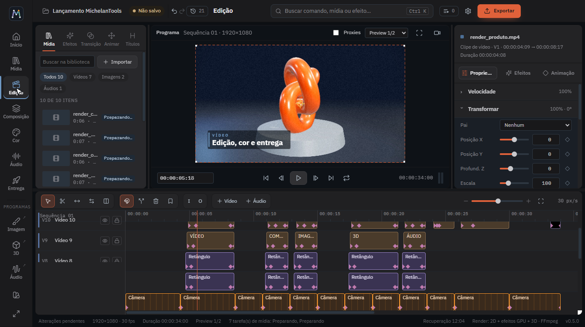

MILENS / EDITOR DESKTOP01 — 05
CAPTURA REAL DO APLICATIVO
Milens
KM—01Editor desktop não destrutivo para produção audiovisual. A timeline multitrilha organiza vídeo e áudio; as áreas de composição, cor e entrega conduzem o trabalho até a exportação. A suíte também reúne ferramentas próprias de imagem, áudio e 3D, além de plugins.
Timeline multitrilhaKeyframes & curvasMixer de áudioPlugins